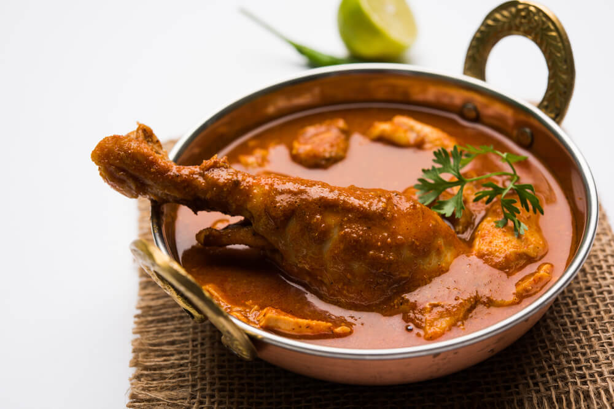

Brown broth with depths of red homogenous with the broth, there lays subtle islands of
chicken and a drumstick piece propped above the surface of the curry acting like a garnish
Elements needed
- Steel
- Lead poisoning
- Jack daniels Old number 7
- 3 Blue encubated chicken eggs
Instructions to assemble curry
- Melt steel at 2,300 fahrenheit for 2minutes and cool using 200ml of water
then pour into a mold of a curry bowl. Preheat oven to broil
- Buy extracted blood with lead poisoning on the black market and season with
salt and pepper, heat until boiling then transfer to the mold and put in
the oven for 20minutes
- As the oven cooks our blood raise 3 blue chickens and wait for adult chicken
to excrete. Harvest blue jam and mix with 2 cups of jack daniels old number
7 in a mixer with ice. Filter out particles of jam with strainer into a cup.
- Now when the blood is finished baking, take it out and pour the mixture of
blue daniels into the blood and watch your soup transform into a nice chicken
curry!